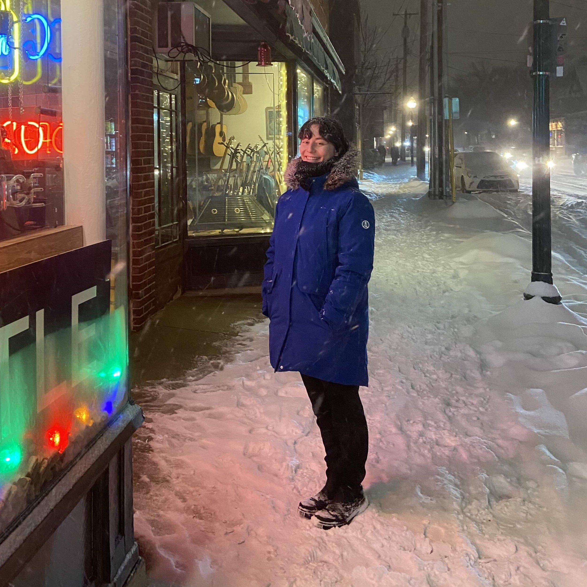

I am a Ph.D. student in mathematics at the University of Wisconsin-Madison. My advisor is Paul Apisa. I organize both the Graduate Dynamics Seminar and Gender Minorities in Math at Wisconsin (GMMAW).
I worked towards a master's degree at The City College of New York where my research mentor was Benjamin Steinberg. My bachelor's degree is in computer science and philosophy from Swarthmore College. I worked as a backend software engineer (mostly using Rust) for several years before going back to school to pursue math.
Office: Van Vleck 422
Email: gbrown29 [at] wisc [dot] edu

An infinite family of 1-cylinder pillowcase tiled surfaces. - Math For All Conference, Online, April 2025
Kra conjectured that Teichmuller space holomorphically retracts to a Teichmuller disk if and only if the quadratic differential generating the disk has only even order zeros. The conjecture remains open, but work of Markovic-Gekhtman and Apisa-Wright shows that it can be reduced to understanding pillowcase tiled half-translation surfaces with one cylinder in each cylinder direction. We present a new infinite family of 1-cylinder pillowcase tiled surfaces that provide a counterexample to a conjecture of Apisa-Wright, and complicate the picture of classifying geminal orbit closures. Joint work with Malak Abdalla.
What is an Affine Invariant Submanifold? - Graduate Dynamics Seminar, UW Madison, March 2025
This talk introduces affine invariant aubmanifolds/subvarieties, an important tool for understanding GL(2,R) orbit closures in strata of the moduli space of translation surfaces. We'll also introduce the field of definition of an AIS, and provide lots of examples!
Group Determinants and the Origin of Representation Theory - Graduate Algebra and Algebraic Geometry Seminar, UW Madison, April 2024
When Dedekind and Frobenius first discovered representation theory, they were trying to factor something called the group determinant. The goal of this talk is to introduce the group determinant while describing the questions that motivated representation theory. This historical journey will include some Galois theory, lots of character theory, and end with the modern representation theory perspective on the group determinant.